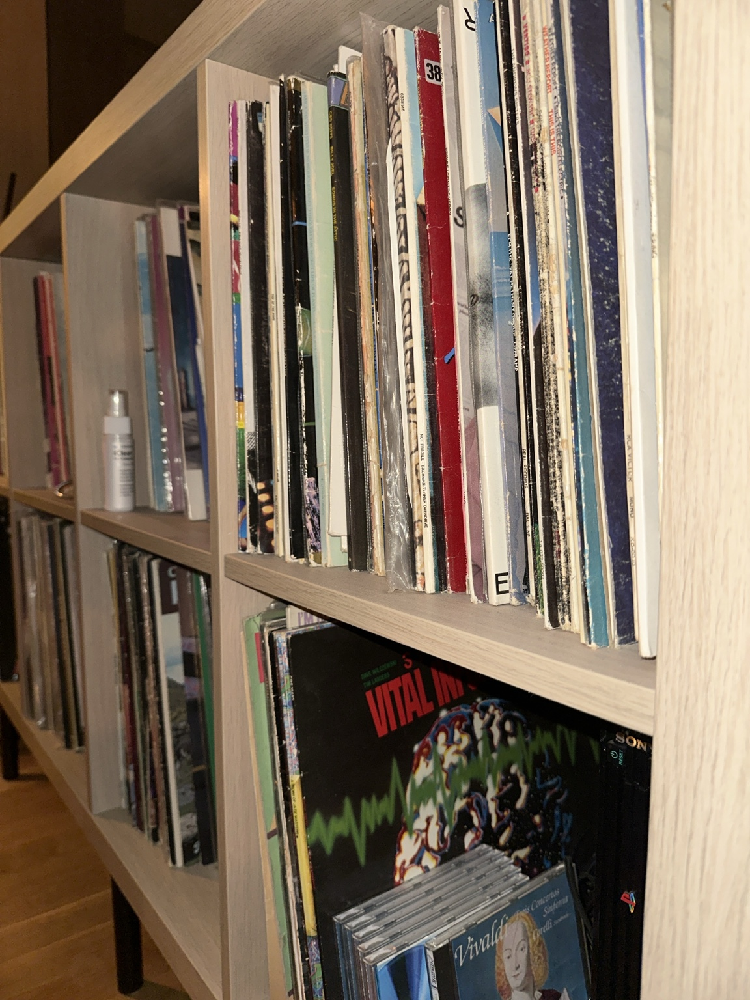

På fotografiet av platesamlingen står LP-ene tett, med slitte omslagskanter. CD-er har også fått plass i hyllen. Musikken ligger fortsatt i sporene. Det praktiske spørsmålet begynner et annet sted: finnes det fortsatt en vei fra rillen til høyttaleren?
Når kontakter, forsterkere og lyttevaner endrer seg, kan et fullt brukbart apparat ende som møbel. En manglende PHONO-inngang på en nyere forsterker kan se ut som en stopp, men i noen oppsett er det bare signalet som trenger en bro. Før vi kaller spilleren utdatert, er det verdt å finne ut hva som faktisk mangler.
Fra rillen til forsterkeren
Signalet fra en platespiller kan trenge tilpasning før en vanlig linjeinngang kan bruke det. Et separat phonotrinn kan være broen: Pro-Ject beskriver et slikt trinn som tar imot signal fra MM- eller MC-pickup, forsterker det, gjør RIAA-korreksjonen og sender det videre til en linjeinngang som AUX. Det kan løse et tilkoblingsproblem; en faktisk feil i spilleren må fortsatt repareres for seg. [1]
Broen kan allerede være bygget inn. Noen spillere har eget phonotrinn, og noen forsterkere har en PHONO-inngang som passer pickupen. Da finnes den nødvendige funksjonen allerede i anlegget.
Derfor begynner undersøkelsen med modellnummer, pickup og innganger – før nettbutikken. Pickupen er delen som leser platen; riktig tilpasning avhenger blant annet av hvilken type som sitter i spilleren, og hvilket signal forsterkeren forventer.
Pro-Jects bruksanvisning viser også hvorfor riktig vei gjennom anlegget betyr noe: utgangen fra et eksternt phonotrinn går til en linjeinngang. Sender man signalet videre gjennom enda en PHONO-inngang, får det en ny runde forsterkning og RIAA-korreksjon. Feil innstilling eller tilkobling kan gi svak lyd, forvrengning eller brum. Før man vurderer utskifting, er det derfor verdt å kontrollere selve oppsettet. [2]
Fordypning: RIAA og riktig tilkobling
Et phonotrinn har to oppgaver: å forsterke signalet fra en magnetisk pickup og korrigere frekvensbalansen etter RIAA-kurven. Ved avspilling løftes bassområdet og diskanten dempes relativt til 1 kHz, som motvirker frekvensformingen ved gravering av platen. I denne signalveien skal en vanlig linjeinngang motta signalet etter nødvendig forsterkning og RIAA-korreksjon. Texas Instruments beskriver korreksjonen og kretsprinsippene.
Kurven i tall
Standardkurven har tidskonstantene 3180, 318 og 75 mikrosekunder. Disse svarer til omtrent 50, 500 og 2122 Hz gjennom sammenhengen f = 1/(2π·τ). Texas Instruments oppgir avspillingskorreksjonen ved 20 Hz til cirka +19,3 dB og ved 20 kHz til −19,6 dB, relativt til 1 kHz. Tallene gjelder selve korreksjonen. Bassinnholdet i den ferdige innspillingen avhenger også av musikken og produksjonen. [Teknisk kilde]
Signalveien
| Utgangspunkt | Riktig vei videre |
|---|---|
| Magnetisk pickup, eksternt phonotrinn | Spiller til passende MM-/MC-inngang på phonotrinnet. Derfra til AUX eller annen linjeinngang på forsterkeren. |
| Magnetisk pickup, forsterker med passende PHONO-inngang | Spiller til PHONO. Forsterkerens phonotrinn utfører korreksjonen. |
| Spiller med aktivert innebygd phonotrinn | Linjeutgang til linjeinngang. Kontroller spillerens PHONO/LINE-valg i manualen. |
Én RIAA-korreksjon i avspillingskjeden. Utgangen fra et eksternt phonotrinn skal normalt til linjeinngangen. Tilkobling gjennom enda et phonotrinn gir dobbel korreksjon. En passiv kontaktadapter endrer forbindelsen; nødvendig signalforsterkning og RIAA-korreksjon må et phonotrinn sørge for. [Tilkoblingseksempel]
MM, MC og belastning
MM betyr moving magnet; MC betyr moving coil. Lavutgangs-MC trenger normalt mer forsterkning enn MM. Høyutgangs-MC kan passe til en MM-inngang, men pickupens spesifikasjoner avgjør. I Pro-Jects eksempel er forsterkningen ved 1 kHz 40 dB for MM og 60 dB for MC: henholdsvis 100 og 1000 ganger signalspenningen. Tallene gjelder dette produktet; riktig innstilling for eget anlegg må velges etter utstyrets spesifikasjoner. [Spesifikasjoner]
Også elektrisk belastning teller: inngangsmotstand og samlet kapasitans i inngang og kabling må vurderes mot pickupens anbefaling. Forsterkningen må passe signalet; lav støy og tilstrekkelig margin før overstyring må ses sammen. [Belastning og forsterkning]
Videre lesning: erfaringer med pickuper
Phono Cartridge Reviews samler Clives omtaler av hans egen pickupsamling. Han beskriver lytteinntrykk og oppgir anlegget som er brukt. Les for eksempel om Audio-Technica AT-VM95E og den eldre Shure M75ED Type 2.
Disse erfaringene kan gi gode spørsmål å ta med til egen lytting. Forfatteren fremhever selv personlig smak og samspillet med resten av anlegget. Tekstene er personlige vurderinger; innstillinger må kontrolleres mot produsentens dokumentasjon, og oppgitte priser og tilgjengelighet må sjekkes på nytt.
Kvalitet som kan tas vare på
Tre og metall dokumenterer ingen lydkvalitet. De kan likevel være en grunn til å stoppe opp. Et apparat vi liker å se på, ta på eller ha i rommet, kan være verdt å undersøke før det byttes ut. Materialgleden gir først og fremst en grunn til å stille neste spørsmål.
Det spørsmålet kan være helt konkret: Lar apparatet seg åpne og sette sammen igjen? Finnes dokumentasjon? Kan en defekt del skiftes? Finnes en egnet erstatning, og kan arbeidet utføres til en pris eieren synes gir mening?
Da blir reparerbarhet noe man kan undersøke i stedet for et ord man setter på produktet. Den viser seg i deler, tegninger, tilgang, kunnskap og arbeid. Tre og metall forteller oss fortsatt verken hvilken lyd vi får eller hvor mange år som gjenstår – men de kan gi oss lyst til å finne det ut.

Kunnskapen rundt apparatet
Et gammelt apparat trenger av og til mer enn en reservedel. Det trenger noen som kan finne manualen, kjenne konstruksjonen eller se forskjellen mellom et tilkoblingsproblem og en feil som faktisk må repareres.
Repair Café beskriver møteplasser hvor besøkende tar med gjenstander og reparerer sammen med frivillige som har praktiske ferdigheter. Organisasjonen fremhever læring underveis og formidling av reparasjonskunnskap, og beskriver også henvisning videre til profesjonelle reparatører. [3]
Slik kan eldre lydutstyr få en vei tilbake til bruk gjennom flere hender. Eieren har apparatet og ønsket om å bruke det. En annen kan ha dokumentasjonen. En tredje kan kjenne feilen eller gjøre arbeidet. Spesialisert elektronikk kan fortsatt kreve et verksted; poenget er at kunnskapen rundt gjenstanden er en del av det som gjør videre bruk mulig.
Verdien ligger dermed både i apparatet og i erfaringen som holder det i gang. Et oversiktlig reparasjonsforløp kan hjelpe én eier å ta en beslutning – og samtidig bevare kunnskap som kommer neste apparat til gode.
Et mer presist spørsmål
Kildegrunnlaget i denne saken gir foreløpig ingen tall på hvor mye elektronikk som faktisk kastes fordi mote, kontakter eller standarder har endret seg. En miljøgevinst krever et eget grunnlag; reparasjon alene etablerer ingen slik effekt. Kostnad, funksjon og videre bruk må vurderes konkret.
Det vi vet her, er mindre og mer praktisk: eldre platespillere kan i mange oppsett kobles til nyere forsterkere når signalveien er riktig. Det gir et bedre første spørsmål når et apparat blir stående:
Hva trenger dette for å være til nytte igjen?
Fremtid kan også være flere gode år med det vi allerede har.
Svaret kan være en riktig forbindelse, vedlikehold, en reservedel eller hjelp fra noen som kjenner apparatet. Noen ganger begynner videre bruk med noe så lite som å finne ut hva man faktisk har. Derfra kan musikken bli en grunn til å ta vare på både materialene og ferdighetene rundt dem.
Kilder og grunnlag
- Pro-Ject: Phono Box, teknisk produktside. Brukt som dokumentasjon av signaltilpasning. Produktet er kun et teknisk eksempel; valg av utstyr krever en vurdering av eget anlegg.
- Pro-Ject: bruksanvisning, revisjon 2013.1.15. Brukt for tilkobling og feilsøking på dette produktet.
- Repair Café International: om reparasjonsmøteplassene. Organisasjonens egen beskrivelse av tilbudet. Denne saken bygger på beskrivelsen alene, uten en uavhengig effektmåling.
- Texas Instruments: AN-1651, Keeping Up with the Expanding Demands of High-Performance Audio — avsnittene om RIAA. Teknisk applikasjonsrapport brukt for RIAA-kurve, forsterkning og belastning. Spilleren på illustrasjonen er utestet av redaksjonen.
- Phono Cartridge Reviews: personlige pickupomtaler. Oppgitt som videre lesning og subjektive erfaringer. Tekstene må leses innen denne rammen; tekniske data må hentes fra produsentdokumentasjon, og sammenligningene uttrykker anmelderens vurderinger.
Fordypningsboksen gjelder magnetiske pickuper og vanlig RIAA-avspilling. Andre pickupprinsipper og historiske platekurver krever egen vurdering.
Kilder og sentrale påstander kontrollert på nytt 3. oktober 2026. Dette er en forklarende artikkel basert på dokumentkilder, et redaksjonelt innspill og innsendte fotografier. Spilleren som er utgangspunkt for hovedillustrasjonen, er verken undersøkt, lyttet til eller reparert av redaksjonen. Full modellidentitet, pickup og teknisk tilstand gjenstår å verifisere. Fotografiet av platesamlingen er gjengitt uendret. Hovedillustrasjonen er en separat foto/KI-bearbeidet illustrasjon med genererte naturelementer, tydelig merket ved bildet. Radioer og endrede sendenett ligger utenfor denne artikkelen.
Redaksjonell oppdatering 4. oktober 2026: Saken er bearbeidet på nytt for rytme, leserreise og tydeligere skille mellom hovedløp og teknisk fordypning. Kildegrunnlaget og de tekniske hovedpåstandene er de samme som i forrige publiserte versjon.
Redaksjonell bearbeiding med KI. Denne bildeutgaven har en foto/KI-bearbeidet hovedillustrasjon.